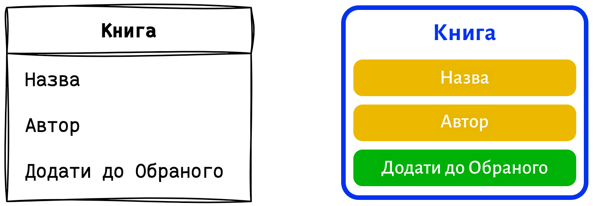

Метод проектирования интерфейсов, основанный на взаимосвязанных информационных сущностях.
“
Этот метод сочетает принципы UX (пользовательского опыта) и ERM (моделирования данных).
Он помогает организовать информацию так, чтобы пользователи могли легко находить, изучать и взаимодействовать с ней.
Что такое сущности?
Сущность — ключевое понятие метода. Как строительные блоки, они разделяют информацию на логичные, понятные пользователю части.
Свойства сущности определяют её уникальные характеристики.
Функции позволяют пользователям взаимодействовать с сущностью.
Связи между сущностями возникают через общие свойства и функции, а также через вложения одной сущности в другую.
Простые сущности (элементы) обычно не имеют вложений или их число минимально.
Сложные сущности (контейнеры) могут содержать множество однотипных элементов, как списки.
Сущности: элемент и контейнер, связанные через свойства и функции.
С чего начать?
Первый шаг — определить возможности системы для пользователей. В этом помогают сценарии взаимодействия.
Концептуальный этап выявляет ключевые сущности, отвечающие целям системы.
Например, объекты реального мира: Книга, Автор, Пользователь.
Логический этап определяет свойства, функции сущностей и их взаимосвязи.
Например: Название или Цена товара, а также Добавление его в корзину.
Описание сущности «Книга» с помощью сценария.
Как это изобразить?
Диаграмма — мощный инструмент, который дает ясное видение системы, улучшает коммуникацию и помогает исправить ошибки на ранних стадиях проекта.
Наброски и ментальные карты — для быстрой фиксации идей.
Инструменты: бумага и ручка, флипчарт, Miro, Draw.io, xMind.
Чистовая версия — для презентации проекта команде или клиенту.
Инструменты: Sketch, Figma, Adobe Illustrator etc.

Примеры разных подходов к представлению элементов.
От составителя
Этот метод предлагает
широкий взгляд на проектирование и требует
дальнейшей проработки. Он охватывает
интересы разных специалистов, поэтому
обратная связь будет особенно ценна.
Темы для углубленного изучения